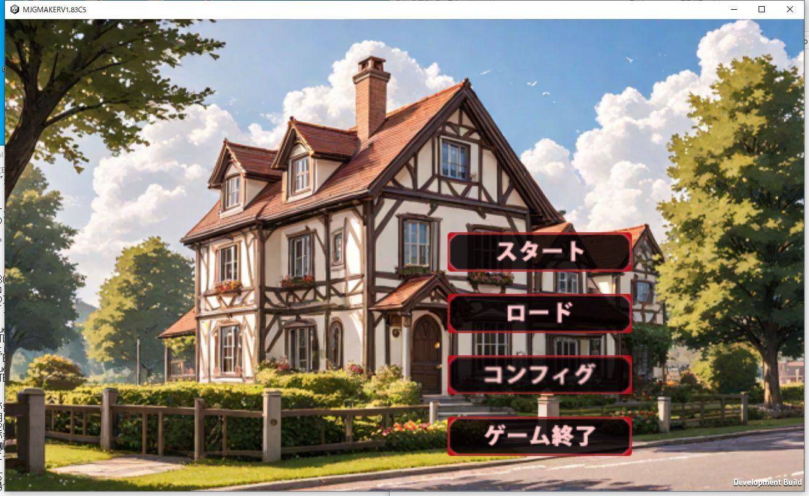

|
エディタを起動します 起動後、Asset設定から、暗号鍵作成でPemKeyを作ります。 PemKeyが出来たらそれで扱うテキストデータの作成をします。KeyMakeに移動してください。 | |
|
KeyMakeに移動後、必要な項目にデータを入れて、テキストファイルを作成します。 このテキストファイルは単体で動く、PemKeyとペアにするためのファイルで、最終的にbinファイルが完成したら必要なくなります。 今回はアセットをウィンドウズ上で使うので、必要なテキストファイルがひととおり入る予定のファイル名を記入します。 また、Zipファイルは使わないのでチェックリストは外します。 | |
|
起動その他に使うアセットファイルはあらかじめ作っておきます。 起動時は絵の入ったアセットファイルと音楽が入ったアセットファイルを別に読んで、起動しているので、そちらのファイルがどれなのかを指定します。 基本アセットの設定で、起動時の絵と音楽の欄があるので、起動時に使う音楽の入ったアセットと、使うための絵が入ったアセットを指定してください。 また、アドベンチャー部分のボタンや、起動時のボタンなどの絵も起動時の中に入れて使います。 | |
|
一旦そこまで出来たら起動してみてください。無事に起動画面まで出たら今回はOKです。 アドベンチャーモードのアセット等の設定は次にやります。 |  |